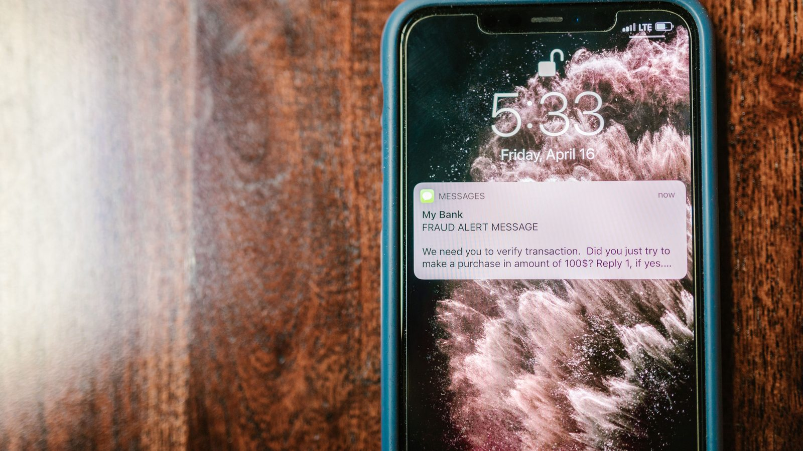

Brasil · Economia
Brasil · EconomiaAposentado sem biometria facial volta a poder contratar consignado, e a autorização é pelo Meu INSS
Onde entra a biometria na hora de autorizar empréstimo, e o que segue proibido por telefone.
Pesquisa do Cetic.br apresentada nesta segunda mostra que 32% dos usuários de internet com 16 anos ou mais passaram por tentativa de golpe com uso de dados pessoais. O aplicativo de mensagem é o caminho em 84% dos casos, seguido da ligação telefônica, com 79%.
Em 30 segundos · Modo de Leitura, formato original Santa Informa
Cerca de 45 milhões de usuários de internet no Brasil já sofreram tentativa de golpe com uso de dados pessoais.
Isso é 32% de quem usa internet e tem 16 anos ou mais.
E 20% disseram que foram vítimas de verdade, ou seja, um em cada cinco.
O dado é da pesquisa do Cetic.br, ligado ao Comitê Gestor da Internet no Brasil.
O caminho mais usado é o aplicativo de mensagem, com 84% dos casos.
Depois vêm ligação telefônica (79%), site ou aplicativo falso (71%) e SMS (71%).
A reação mais citada por quem passou por isso foi estresse ou mal-estar.
O prejuízo passa do dinheiro: golpista que toma o e-mail derruba junto o acesso ao Gov.br.
Quem tem menos escolaridade relatou mais situações, e o estrago é maior.
A pesquisa ouviu 2,5 mil pessoas, em dezembro de 2025.
EconomiaPublicada em Redação Santa Informa

Se você já recebeu no WhatsApp uma mensagem estranha do banco, ou uma ligação em que o outro lado sabia seu nome completo, saiba que a companhia é grande. Cerca de 45 milhões de brasileiros com 16 anos ou mais que usam internet, o equivalente a 32%, já passaram por tentativa de golpe com uso dos próprios dados pessoais. E 20% viraram vítimas de fato, um em cada cinco.
Os dados são da terceira edição da pesquisa sobre privacidade e proteção de dados pessoais do Cetic.br, centro ligado ao Núcleo de Informação e Coordenação do Ponto BR e ao Comitê Gestor da Internet no Brasil. Foram 2,5 mil entrevistas online, feitas em dezembro de 2025, com usuários de internet de 16 anos para cima em todo o país. O resultado foi apresentado nesta segunda-feira, 31, em seminário na capital paulista. Segundo o coordenador Winston Oyadomari, é a primeira vez que o levantamento pergunta diretamente sobre golpe, um assunto que a pessoa costuma ter vergonha de contar.
O aplicativo de mensagem lidera com folga, presente em 84% dos casos relatados. Vêm em seguida a ligação telefônica, com 79%, o site ou aplicativo falso e o SMS, ambos com 71%, o e-mail, com 69%, e a rede social, com 67%. Um detalhe chamou a atenção dos pesquisadores: quem acessa a internet só pelo celular relata mais tentativa por site e aplicativo falso do que quem também usa computador.
A reação mais citada por quem passou pela situação foi estresse e mal-estar, que respinga na família. E o dano vai além da conta bancária. Quando o golpista toma o e-mail, ele derruba junto o acesso ao Gov.br, e a pessoa fica sem benefício, sem agendamento e sem serviço público na hora em que mais precisa. A pesquisa também mostra que quem tem menos escolaridade relatou todas as situações com mais frequência, e nesse grupo o estrago é maior.
No setor público, a fatia de órgãos com uma área dedicada à proteção de dados subiu de 36% em 2023 para 42% em 2025, empurrada pelas prefeituras pequenas, de até 10 mil habitantes, que foram de 31% para 37%. Prefeitura e câmara do litoral guardam CPF, endereço e dado de saúde de muita gente, então o assunto bate aqui também. Para o morador, a lição prática é curta. Banco não pede confirmação por link em mensagem, e hoje desconfiar do aplicativo de mensagem vale mais do que desconfiar do e-mail.
O resumo de 30 segundos está no topo e a versão completa é o texto acima. Aqui ficam as três leituras da casa sobre o mesmo assunto.
Clara, a otimista
Falar de golpe em pesquisa oficial já é um avanço. Quem cai fica constrangido, não conta para ninguém e o problema segue invisível. Com número na mesa, dá para cobrar campanha e treinamento.
E tem movimento no setor público: mais órgãos com gente cuidando de proteção de dados, e a maior alta veio das prefeituras pequenas, que são as que têm menos estrutura.
Seu Prudêncio, o criterioso
Merece atenção o recorte por escolaridade. Quem estudou menos relata mais situação e sofre prejuízo maior, e campanha escrita em linguagem de cartilha de banco não alcança essa pessoa.
Vale acompanhar também o dado das empresas: 9% das que guardam dados pessoais dizem armazenar informação de menores de 18 anos, e só 16% nomearam formalmente um encarregado de proteção de dados. Uma sugestão útil para o comércio daqui: conferir quem, dentro da loja, tem acesso ao cadastro do cliente, porque a fila da fiscalização anda.
E é justo reconhecer o valor do levantamento. Ter série histórica, com 2023 e 2025 lado a lado, permite ver o que melhorou de verdade em vez de discutir impressão.
Caco, o sarcástico
Trinta e dois por cento levaram tentativa de golpe. Os outros 68% provavelmente levaram também, só não perceberam.
O aplicativo de mensagem lidera com 84%. Aquele mesmo em que a tia manda bom dia com flor.
A pesquisa diz que a reação mais comum foi estresse e mal-estar. Confesso que esperava gratidão.
Fontes: Agência Brasil, reportagem publicada em 31 de agosto de 2026, às 14h02, sobre a terceira edição da pesquisa Privacidade e proteção de dados pessoais do Cetic.br, do NIC.br, vinculado ao Comitê Gestor da Internet no Brasil, de onde saem os 45 milhões de usuários, os 32% que sofreram tentativa de golpe, os 20% que foram vítimas, os percentuais por canal de abordagem, o recorte por escolaridade, os dados de empresas e do setor público, a metodologia de 2,5 mil entrevistas online feitas em dezembro de 2025 e as declarações do coordenador Winston Oyadomari. A foto do topo é imagem ilustrativa de banco gratuito e não registra o fato noticiado.
Brasil · EconomiaOnde entra a biometria na hora de autorizar empréstimo, e o que segue proibido por telefone.
Como a proteção de dados chegou à mesa do Legislativo de Itapema.